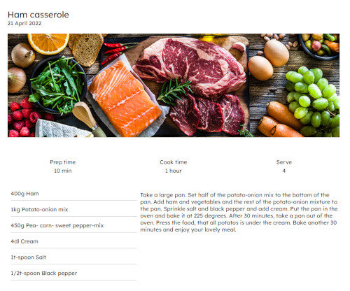

Introduction

This is my Wordpress theme development project. Here you can find blog and recipes.
Structure
There is navigation, which appears when the user scrolls down and disappears when the user scrolls up. The blog- and recipe page have all posts as cards. On the footer, there are page navigation and navigation to social media.
 Visit on Blog website Blog on GithubWhat I have learned?
During this project, I learned how to make WordPress themes. I have learned also how to use custom post types and taxonomies.